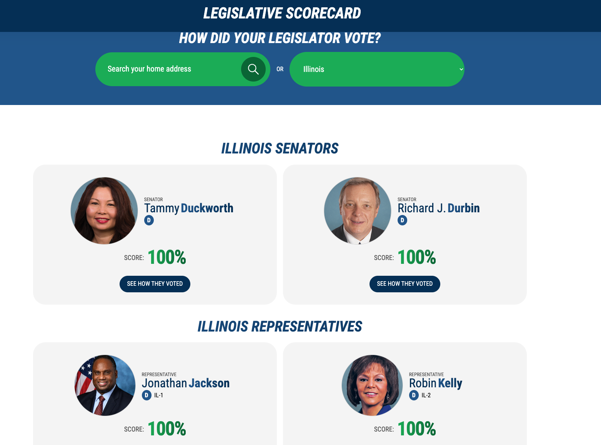
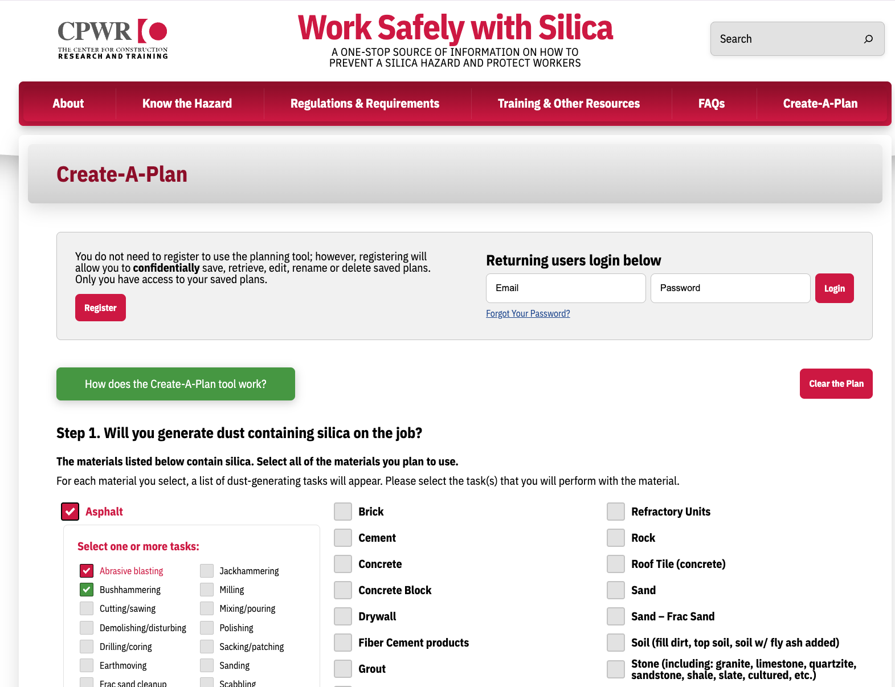

// Chicago · independent consultant · 25+ years building for the web
Custom web tools for unions, nonprofits, and advocacy organizations.
I plan, build, rescue, and scale the software behind campaigns and causes — legislative scorecards, organizing tools, WordPress builds and migrations, Rails and React applications — and I communicate clearly with technical and non-technical stakeholders alike.
Built for AFSCME · CPWR (Silica-Safe) · Robert Wood Johnson Foundation · presidential campaigns · NFL, MLB & NHL properties · federal agencies
What I do
Services & engagement details →WordPress builds & rescues
New sites, migrations from legacy CMS platforms, custom themes and plugins, and rescues of builds that went sideways.
Advocacy & data tools
Legislative scorecards, interactive maps, wage calculators, planning tools — software that turns your data into member action.
Custom applications
Ruby on Rails and React applications, from internal tools to public-facing products, built to be maintained by your team.
AWS infrastructure
Setup, review, and cost optimization across EC2, RDS, S3, and CloudFront — including reserved-instance planning.
API integrations & automation
Action Network, EveryAction, Mailchimp, Asana, and custom REST integrations that remove manual work from your workflows.
AI & LLM integrations
Practical, well-scoped AI features inside the tools you already use — drafting, classification, and process automation.
Recent projects
All work →
AFSCME · rebuilding now for the 2026 cycle
Legislative scorecard
Tracks every U.S. House and Senate vote that matters to one of the nation’s largest public-service unions, grades each legislator, and lands visitors on their own state’s delegation via IP geolocation.

CPWR · silica-safe.org
Silica-Safe planning tool
A WordPress site built from the ground up around a custom multi-step planning tool that generates job-specific safety plans contractors can save, export to PDF, or email.
How I work
01 — Scope
A short call, then a written scope with real estimates. I manage software, budgets, and expectations for a living — you’ll always know where things stand.
02 — Build
Senior work without hand-holding: short-term projects (1–3 months), ongoing engagements, or white-label capacity for agencies that need extra hands.
03 — Handoff
Documentation and tools your own staff can run. I bring a writer’s sensibility to technical work — the why, not just the how.
Have a project in mind?
Tell me what you’re trying to build, fix, or replace. I’ll tell you honestly whether I’m the right person for it.